原文连接:https://www.cnblogs.com/lixinjie/p/playing-springboot-004.html
喜欢写代码，讨厌配环境
我相信这十个字的小标题代表了大多数码农的心声。
十年前读大学时，学校开设了C语言还有C++。但是学习这两种语言，对于新手来说非常没有成就感。
于是我就在校门口买个光盘，装个VS（宇宙第一IDE），还有离线中文版MSDN（最牛的帮助文档），万事已俱备。
学习C#语法，看类的API，然后从WinForm（窗口）开始，用鼠标拖拽控件，设置控件属性，观察自动生成的代码，开启人生的编程之路。
大四的时候接触到Java，首先就是配置环境变量，那时觉得是一个巨复杂的东西，每次都要网上搜好一会儿才能配好。
我学习微软的东西从来就不要配什么环境变量，心里很讨厌这个Java的环境变量，这就导致十年后的今天，我依然要去网上搜如何配置，惭愧惭愧，哈哈。
后来发现，基本上软件都要配置一些环境变量，只不过有的是在安装时已经自动配好了而已，但是对于免安装版（直接解压）的则需要自己配。
我们也来尝试下抽象
熟悉Java的都知道，Java里面有两个内置的配置集合，就是System.getenv()和System.getProperties()。
它们分别是系统环境和系统属性，如下图01：
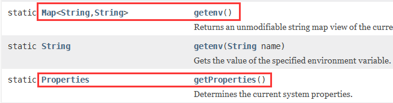
一个是Map类型，一个是Properties类型，说明它们都是一些key-value形式的值。
而且Properties类型是Java里的标准配置方式，它就对应于*.properties文件。
至此，我们已经发现两个问题：
1）配置项都是以key-value形式存在的。
2）配置项的来源是多样化的，如现在的系统环境、系统属性、配置文件等，后期还可能会有其它。
对于配置项的多来源问题，有以下两种方式解决：
1）可以把所有来源都暴露给用户，这样使用起来更加精细，但是也会带来困扰，可能用户也会迷糊到底该去哪个来源取值。
2）在所有来源前面加一个“门面”，只把它暴露出去，用户看到的只是“单一来源”，就从这里取值，其它的啥也不用知道。
Spring选择的是第二种方案，拿到key后，只需依次去每个来源中查找，这时只需规定下多个来源之间的优先级顺序即可。
整体可以用一个图形表示，如下图02：
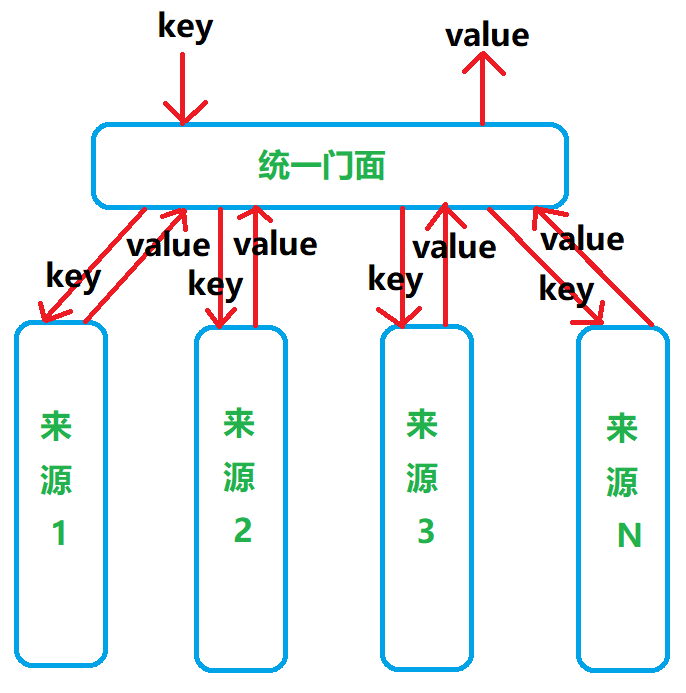
这整体也是一种封装变化的思想，底层的多来源问题被封装起来，对用户不可见。
最终用户传过来一个key，我给返回一个和它对应的value就行了。
来来来，认识两个朋友
配置项在Java中通常叫做属性，即Property。每一个来源其实就是一个源泉，即Source。
所以在Spring中就用PropertySource类来表示一个来源，如下图03：
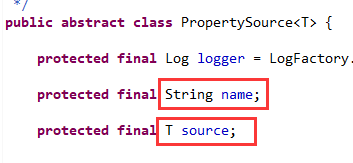
注意两个字段，name和source，name就是为每个源起个名字。source表示真正的资源，是能从中取出value的东西。
然后需要一个门面把多个来源封装起来，如下图04：
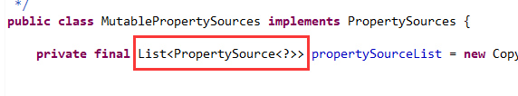
可以看到它里面有一个来源的列表。这就是封装。而且还是有顺序的。
根据key取值就依次遍历所有源即可，如下图05：
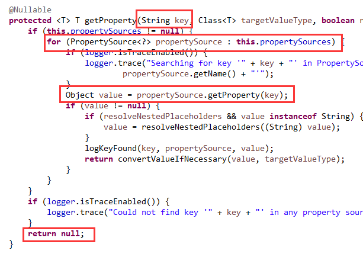
如果所有源中都没找到，返回null就行了。
这样配置项（或配置属性）的问题就已经解决了，很简单吧。
除了配置属性外，还有Profile
配置属性是一个很泛化的概念，说白了它就表示以非写代码的方式从外界向程序中传递特定的值。
它的好处就是修改起来很容易，只需修改下配置文件或命令行参数，然后最多重启一下就可以了。
不用修改代码，自然不用重新编译，当然也不用重新打包发布。
泛化其实就表示囊括所有的意思，但是总会有一些特殊情形，值得单独拿出来特别对待。
如每个软件都会至少经历开发、测试、上线这三个阶段，同样也会有三套环境，即开发环境、测试环境、生产环境。
这里的“环境”其实就是一个特殊情况，我们把它单独拿出来，就叫做Profile。
对不同的环境设置不同的Profile，程序中可以读取到Profile，这样程序就可以适应不同的Profile，展示不同的特性。
最终就可以一套代码打天下。就像华为的一套操作系统适应所有的终端设备。就像Java的一份字节码运行在不同的操作系统上。
在不指定Profile时，通常应该有一个默认的Profile。就像汽车默认是运行在城市道路上一样。
在Spring中，默认的Profile就叫做default。如下图06：
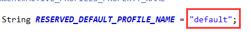
这个default可能没有什么意义，所以Spring提供了修改它的机会，如下图07：
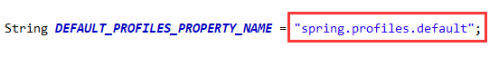
可以使用图中的参数名称去指定默认的Profile，以符合自己的使用习惯。
比如对于汽车这种情况，可以这样：
spring.profiles.default=city我们也可以为不同的环境激活不同的Profile，Spring也提供了方法，如下图08：
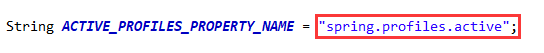
比如汽车上了高速，我们想狂野一下，可以激活运动模式：
spring.profiles.active=sports
最后要说的就是，这个Profile可以指定多个，用逗号分隔即可。
因为Spring是用集合存储的，所以支持多个，如下图09：
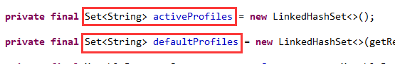
程序在判断哪些Profile被激活时，可以使用逻辑表达式，这样就更加灵活了。
支持与、或、非、括号，如下图10：
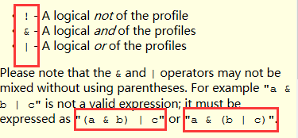
比如我们让程序运行在单节点debug模式，可以这样设置：
spring.profiles.active=standalone,debug
那么下面这些判断将都返回true：
standalone -> true
debug -> true
standalone | debug -> true
standalone & debug -> true
!other -> true
!unknown -> true
下面这些将都返回false：
!standalone -> false
!debug -> false
standalone & other -> false
debug & unknown -> false
(standalone & other) | (debug & unknown) -> false
(standalone | debug) & other & unknown -> false
注：当同时出现与（&）、或（|）时，一定要使用括号。
那什么是Environment呢？
很简单，就是这个公式：
Environment = Properties + Profiles
表示Properties的接口，主要就是处理一些key-value，如下图11：
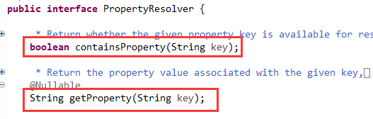
Environment继承了这个接口，又加入处理Profile的内容，如下图12：
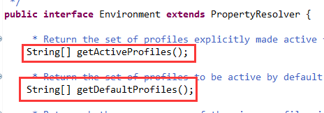
由于要支持key-value数据类型的转换和${..}表达式的解析，所以需要能够配置，如下图13：
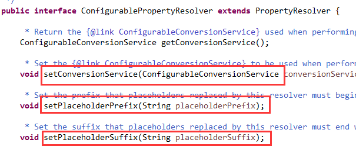
由于需要能够以编程的方式激活Profile或设置默认Profile，所以也需要能够配置，如下图14：
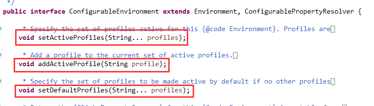
所以，这四个接口就是Spring环境的全部了。
在SpringBoot中Environment的真面目
下面是非web环境：
StandardEnvironment {activeProfiles=[], defaultProfiles=[default],
propertySources=[
ConfigurationPropertySourcesPropertySource {name='configurationProperties'},
SimpleCommandLinePropertySource {name='commandLineArgs'},
PropertiesPropertySource {name='systemProperties'},
OriginAwareSystemEnvironmentPropertySource {name='systemEnvironment'},
RandomValuePropertySource {name='random'},
OriginTrackedMapPropertySource {name='applicationConfig: [classpath:/application.yml]'},
ResourcePropertySource {name='class path resource [mode.properties]'},
ResourcePropertySource {name='class path resource [greeting.properties]'}]}
可以看到配置属性有多个来源，包括命令行参数，系统属性，系统环境，随机数，yml配置文件，properties配置文件等。
以--开头的参数会出现在命令行参数这个源里，如下图15：
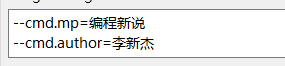
以-D开头的参数会出现在系统属性这个源里，如下图16：
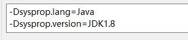
这些源在上面的顺序就是它们的优先级，可见命令行的最高，properties文件的最低。
注意源中的第一个，即名称为configurationProperties的，主要是为了适应SpringBoot的属性名的“松散”绑定而专门用来处理属性名称的。
它并不真正提供属性值，它的值来源于除它之外的其它源。
如果不明白什么是属性名的松散绑定的，看这个示例：
user-name, user_name, userName
这三个属性名称都可以绑定到一个类的userName属性上。
下面是基于Servlet的web环境：
StandardServletEnvironment {activeProfiles=[], defaultProfiles=[default],
propertySources=[
ConfigurationPropertySourcesPropertySource {name='configurationProperties'},
SimpleCommandLinePropertySource {name='commandLineArgs'},
StubPropertySource {name='servletConfigInitParams'},
ServletContextPropertySource {name='servletContextInitParams'},
PropertiesPropertySource {name='systemProperties'},
OriginAwareSystemEnvironmentPropertySource {name='systemEnvironment'},
RandomValuePropertySource {name='random'},
OriginTrackedMapPropertySource {name='applicationConfig: [classpath:/application.yml]'},
ResourcePropertySource {name='class path resource [mode.properties]'},
ResourcePropertySource {name='class path resource [greeting.properties]'}]}
和上面的唯一区别就是多了两个和web相关的源，就是ServletConfig和ServletContext。
可以从它们两个里面取出初始化参数，而且它们的优先级仅次于命令行参数。
备注：还有一种基于Reactive（响应式）的web环境。暂时先不讨论了。
每一个源里面其实都是key-value，内容较多，不再展示。可以自己运行下试试。
本文示例代码：
https://github.com/coding-new-talking/playing-spring.git
>>> 玩转SpringBoot系列文章 <<<
【玩转SpringBoot】用好条件相关注解，开启自动配置之门
>>> 品Spring系列文章 <<<
品Spring：SpringBoot和Spring到底有没有本质的不同？
品Spring：SpringBoot轻松取胜bean定义注册的“第一阶段”
品Spring：SpringBoot发起bean定义注册的“二次攻坚战”
品Spring：注解之王@Configuration和它的一众“小弟们”
品Spring：对@PostConstruct和@PreDestroy注解的处理方法
品Spring：对@Autowired和@Value注解的处理方法
品Spring：真没想到，三十步才能完成一个bean实例的创建
品Spring：关于@Scheduled定时任务的思考与探索，结果尴尬了
>>> 热门文章集锦 <<<
爸爸又给Spring MVC生了个弟弟叫Spring WebFlux
【面试】吃透了这些Redis知识点，面试官一定觉得你很NB（干货 | 建议珍藏）
【面试】如果你这样回答“什么是线程安全”，面试官都会对你刮目相看（建议珍藏）
【面试】迄今为止把同步/异步/阻塞/非阻塞/BIO/NIO/AIO讲的这么清楚的好文章（快快珍藏）
【面试】一篇文章帮你彻底搞清楚“I/O多路复用”和“异步I/O”的前世今生（深度好文，建议珍藏）
作者是工作超过10年的码农，现在任架构师。喜欢研究技术，崇尚简单快乐。追求以通俗易懂的语言解说技术，希望所有的读者都能看懂并记住。下面是公众号的二维码，欢迎关注！